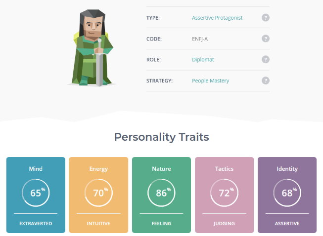

The results show that my personality type is an Assertive Protagonist, and that my role in a team is as a Diplomat. I’ve called myself a diplomat in the past when I’ve been trying to negotiate a cease-fire between my sons, so I mostly agree with the results, but I will need to be careful not to let the result influence my decisions in the team too much. I do believe that I’m a natural coordinator. My philosophy is: A coordinator works for the group and helps implement the groups decisions.